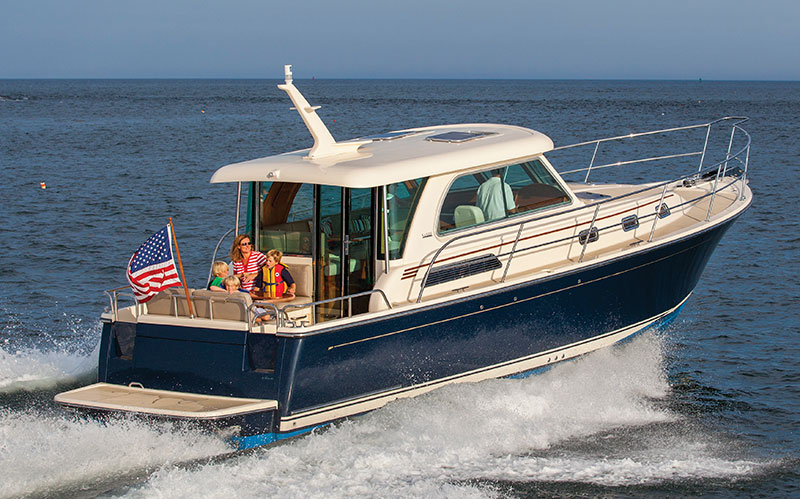

B-Atlas Boat Guide · SABR-38-SA
Sabre 38 Salon Express Salon Express
From 2012
The Sabre 38 Salon Express is a Maine-built Downeast express cruiser combining traditional exterior proportions with higher-speed twin-diesel propulsion and yacht-finish accommodations. Sabre places more emphasis on refinement, systems integration and cruising speed than working-lobster-boat derivatives.

- Length
- 41.75 ft
- Beam
- 13.33 ft
- Draft
- 3.33 ft
- Hull behaviour
- Planing
- Fuel
- Diesel
- Propulsion
- Pod
- Engine configuration
- Twin diesel inboards
- Boat family
- Downeast
- Construction
- Fiberglass
Best for
- Couples seeking premium Downeast cruising at planing speeds
- Owners valuing finish quality and all-weather salon comfort
- Coastal cruising where speed and refinement matter
Trade-offs
- Twin engines and integrated systems increase maintenance cost
- Purchase and operating costs are high relative to simpler single-diesel cruisers
- Express layout provides less exterior working space than commercial-derived lobster boats
Known concerns
- No model-specific concern has been promoted to B-Atlas’s evidence threshold. This does not mean the model has no age-, condition- or hull-specific risks.
Inspection focus
- Inspect propulsion service history, including pods where fitted
- Inspect hull/deck coring and hardware bedding
- Review electrical, HVAC, generator and integrated electronics maintenance
- Inspect windows, doors and salon seals
- Confirm machinery and drive configuration for model year
Continue researching
Related boat models
Duffy 42 Downeast / Lobsterboat Hull
42 ft · Semi-Displacement
Sabre 34 Express Hardtop Express
34 ft · Planing
Duffy 39 Extended Duffy 37 / Custom Downeast
39 ft · Semi-Displacement
Shannon 38 SRD Schulz Reverse Deadrise
38 ft · Displacement
Back Cove 41 Flagship Downeast Cruiser
46.08 ft · Semi-Displacement
Duffy 37 Downeast / Lobsterboat Hull
37 ft · Semi-Displacement
About this record
B-Atlas preserves uncertainty: missing information remains unknown rather than being treated as a negative. Specifications and guidance describe the model record; individual boats can differ by year, equipment, refit and condition.